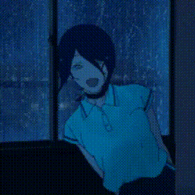

/home/bon/about.html
/portfolio.html
/blog-archive.html

Hello! My name is Gwendolyn Noria, I am a Computer Science and Engineering student at The Ohio State University.
I am a Game Developer and aspiring Software Engineer. I love the outdoors and working on my hobby projects. I hope to live abroad at least once in my life. One day I also wish to travel the United States in a camper van. I am largely self taught and find learning through projects most enjoyable. I visited Japan for 4 weeks (it was lots of fun) and the large state of Texas. Despite living in Ohio at the moment it is my least favorite place (How can Columbus be the 15th biggest city in the US and still not have a metro TOT?)
Throughout my time in college I have worked on several project teams.
Ohio State's Embedded Security club, as Vice President in the 2024-2025 year.
Ohio State's Buckeye Space Launch Initiative, as Avionics Software leader in the 2025-2026 and 2026-2027 years.
I have experience in many programming languages, but these days I shill Zig because its my favorite :3